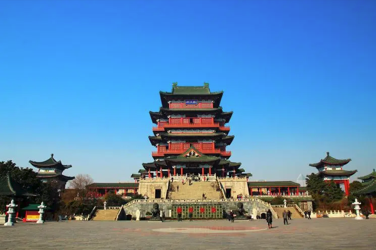

 滕王阁，位于江西省南昌市东湖区，地处赣江东岸，为南昌市地标性建筑、豫章古文明之象征，始建于唐永徽四年（653年），为唐太宗李世民之弟滕王李元婴任江南洪州都督时所修，现存建筑为1985年重建景观；因初唐诗人王勃所作《滕王阁序》而闻名于世；与湖南岳阳岳阳楼、湖北武汉黄鹤楼并称为“江南三大名楼”，是中国古代四大名楼之一、“中国十大历史文化名楼”之一，世称“西江第一楼”。 ------------------------------------------------返回上页----------------------------------------------------- |